Por favor, confirmá tu edad
Por favor, confirmá tu edad
Doce noches entre Buenos Aires y los glaciares australes, bajo los cielos más puros del planeta. Spa de piedra, gastronomía patagónica y un casino sobre el océano.
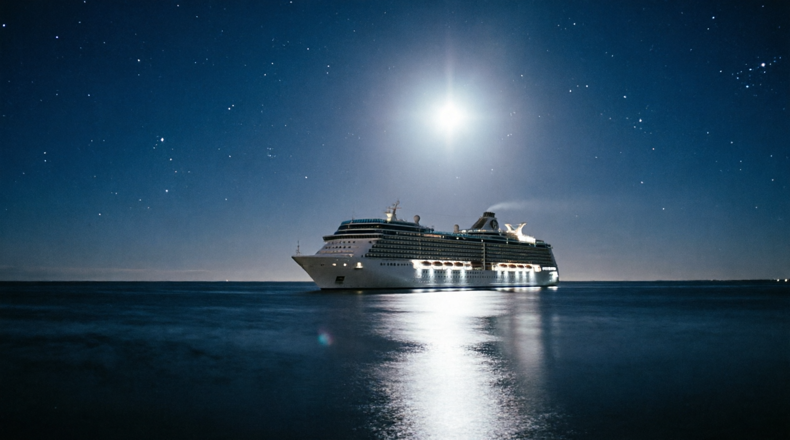
Lino marfil, lana patagónica y ventanales que enmarcan la estela. En cada categoría: biblioteca de a bordo, té de las cinco y servicio de mayordomía.
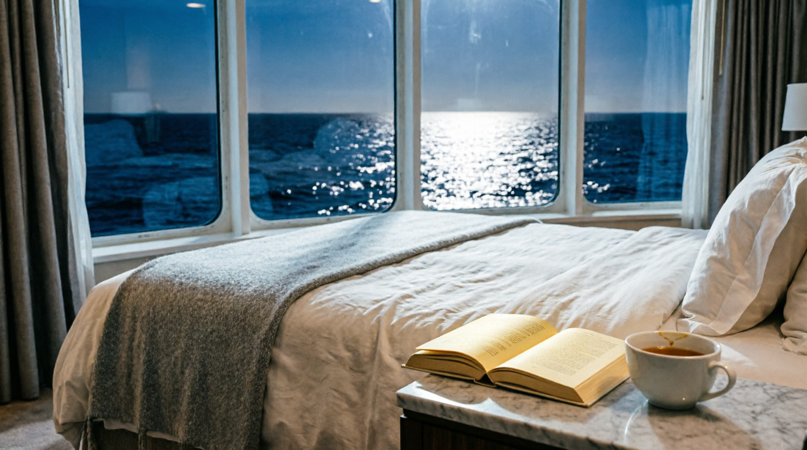
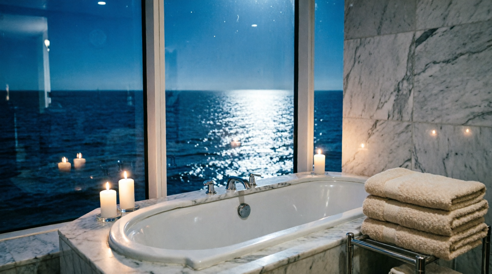
22 m² · cama queen · ventanal al mar · escritorio de lenga.
28 m² · balcón privado · butacas de lectura · baño en mármol.
42 m² · balcón panorámico · living separado · bañera frente al océano.
68 m² · terraza privada · mayordomo dedicado · comedor para seis.
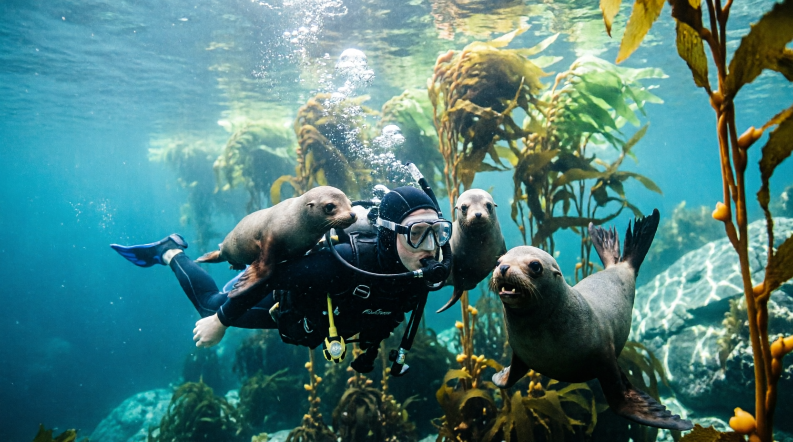
Aguas claras de la colonia de Punta Loma: curiosos lobos que nadan a tu lado.
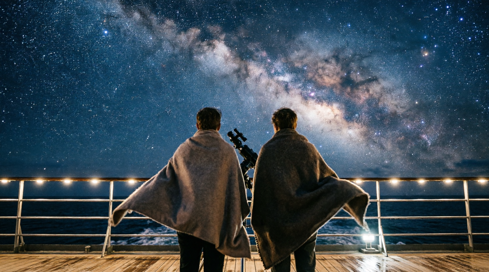
Telescopios y mantas de lana: la Vía Láctea como nunca la viste, sin luz de ciudad.
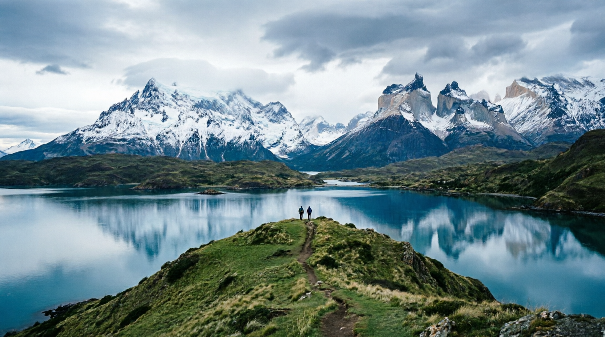
Senderos guiados sobre el fjord, con el macizo patagónico de telón de fondo.
Remadas silenciosas entre icebergs y talleres de fotografía con guías de expedición. Incluye equipo completo y ponchos de lana para las noches de cubierta.
Cordero patagónico, bayas del bosque y pan de masa madre. Té de las cinco en el salón Lunar y café de especialidad al amanecer.
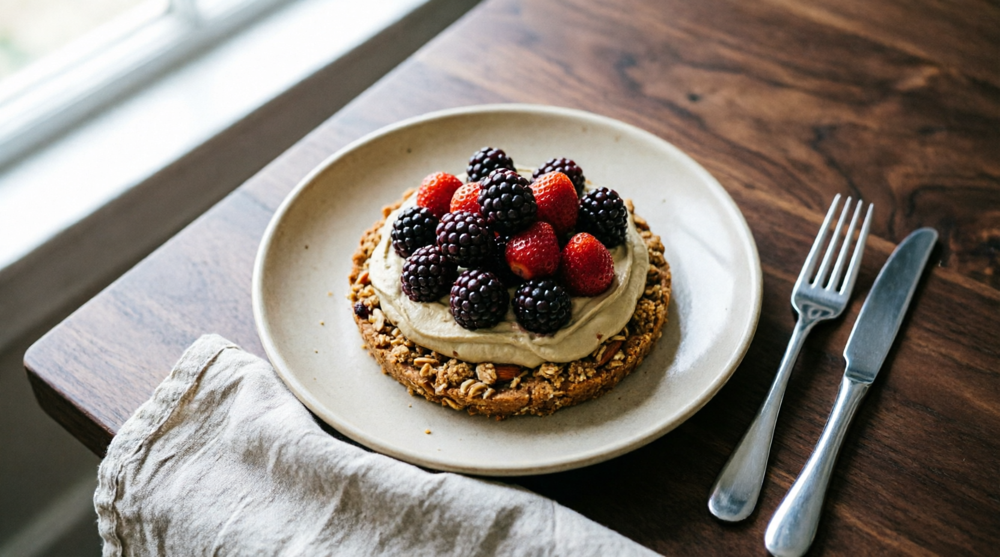
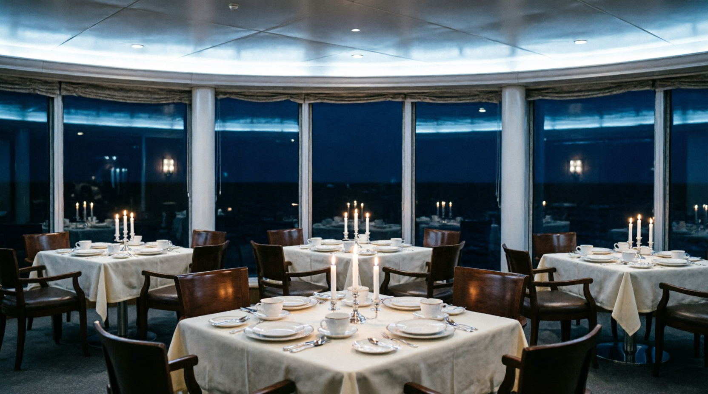
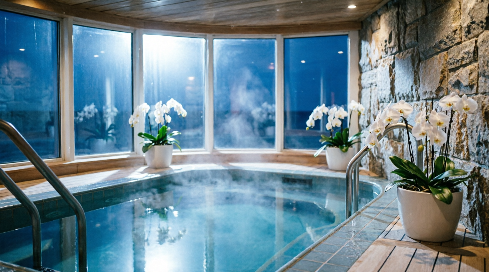
Piscina climatizada de piedra negra, sauna con vista al océano y tratamientos con aceites de calafate. Yoga al amanecer en la cubierta proa.
Terciopelo índigo, cristal y plata: mesas en vivo y slots premium con el océano de telón de fondo. Torneos de póker cada semana de navegación.
Acceso exclusivo para mayores de 18 años. Jugá con moderación. Ver Política de Juego Responsable.
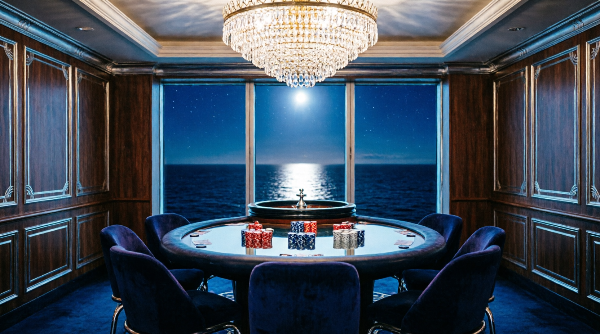
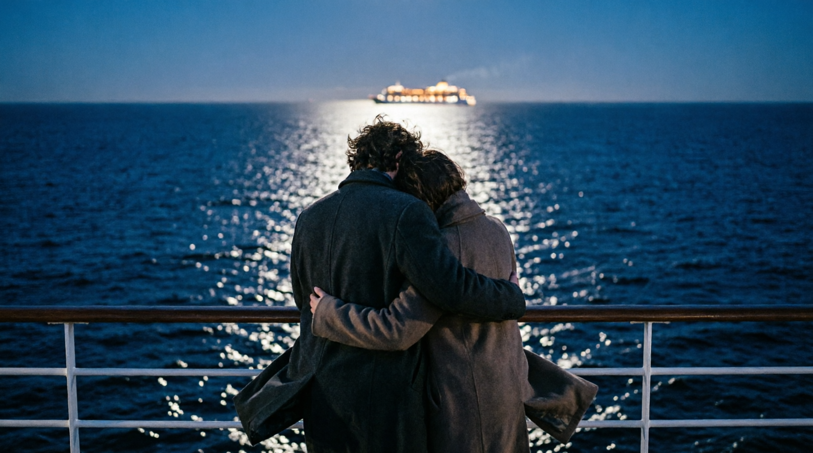
"Navegamos toda la noche y la luna no se movió de nuestra estela."Mariana & Julián — Buenos Aires
Día 1 · Embarque en Puerto Madero y cena de bienvenida.
Día 2 · Spa, astronomía y primera noche de casino.
Día 3 · Snorkel con lobos marinos y fauna de Península Valdés.
Día 5 · El fin del mundo y el Canal Beagle.
Día 6 · El mítico paso entre dos océanos.
Día 7 · Kayak entre icebergs y paredes azules.
Días 8–11 · Milonga, cine clásico y conferencias australes.
Día 12 · Desembarque con desayuno frente a la ciudad.
Un asesor de Luna Patagónica te escribe dentro de las 24 horas con toda la información de la temporada.